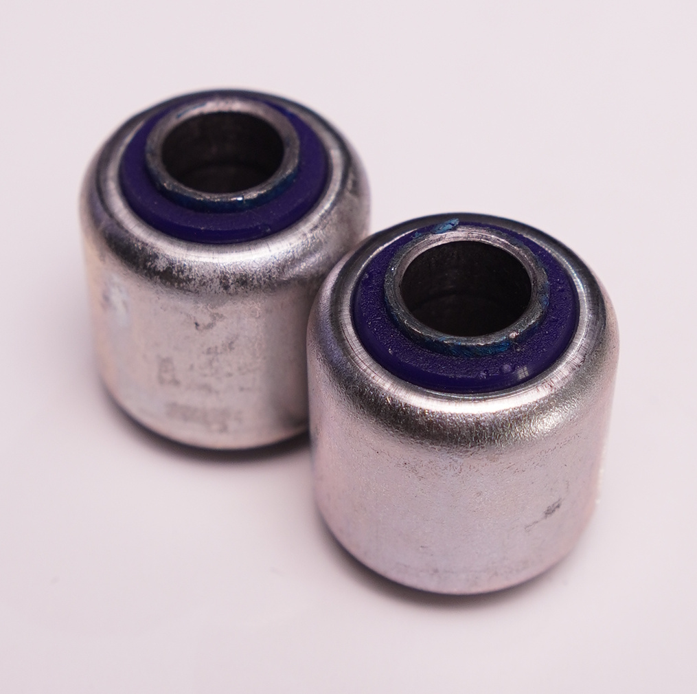
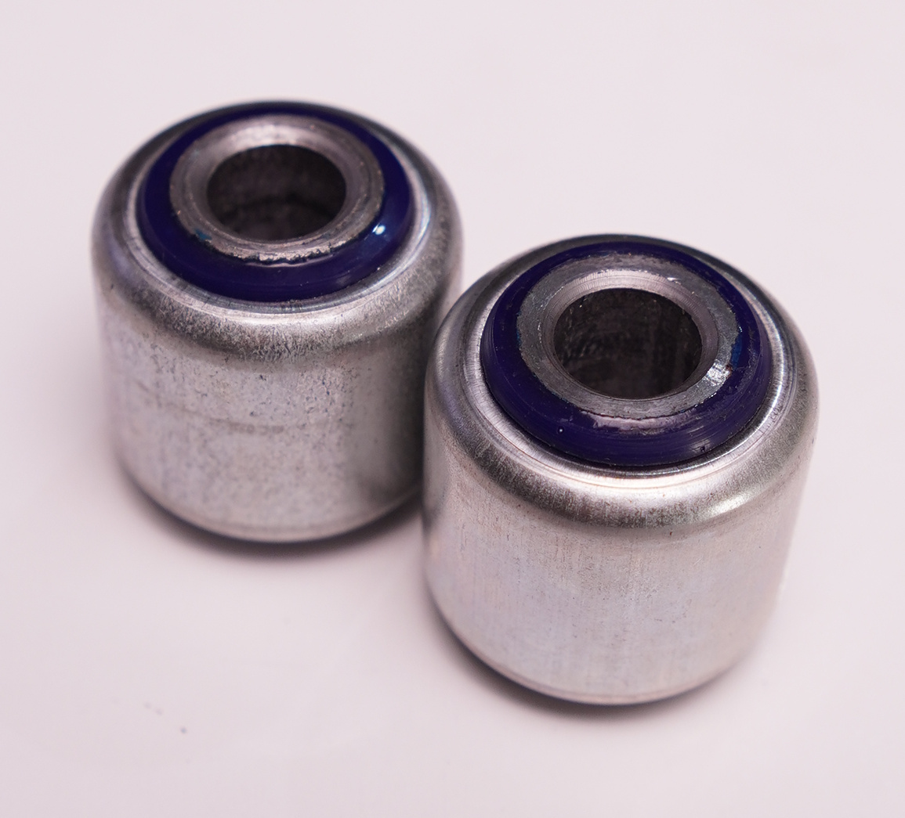
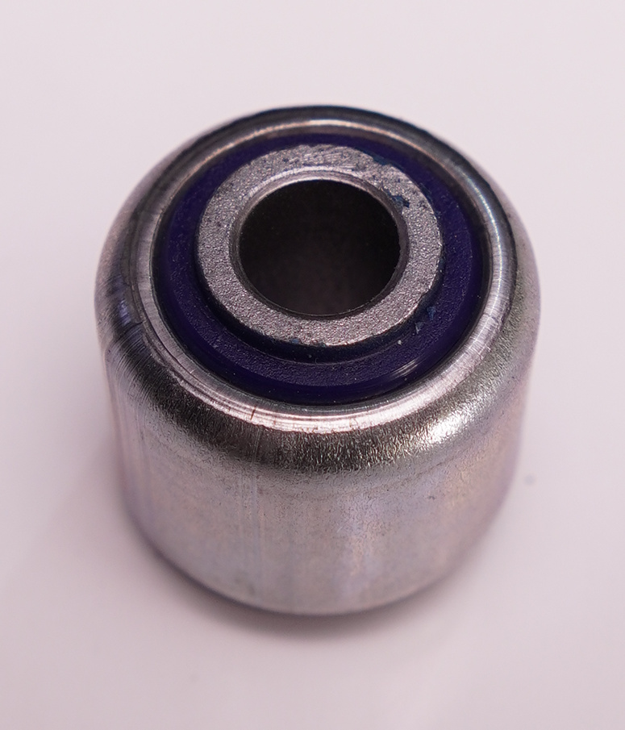

MILÍMETROSFAZEM DIFERENÇA.
Hilux · Buchas do amortecedor dianteiro

35 mm
KIT10115

38 mm
KIT10141

40 mm
KIT10119
Medidas distintas. Confira a referência.Imagem ilustrativa da comparação, sem escala dimensional.
Hilux · Buchas do amortecedor dianteiro


